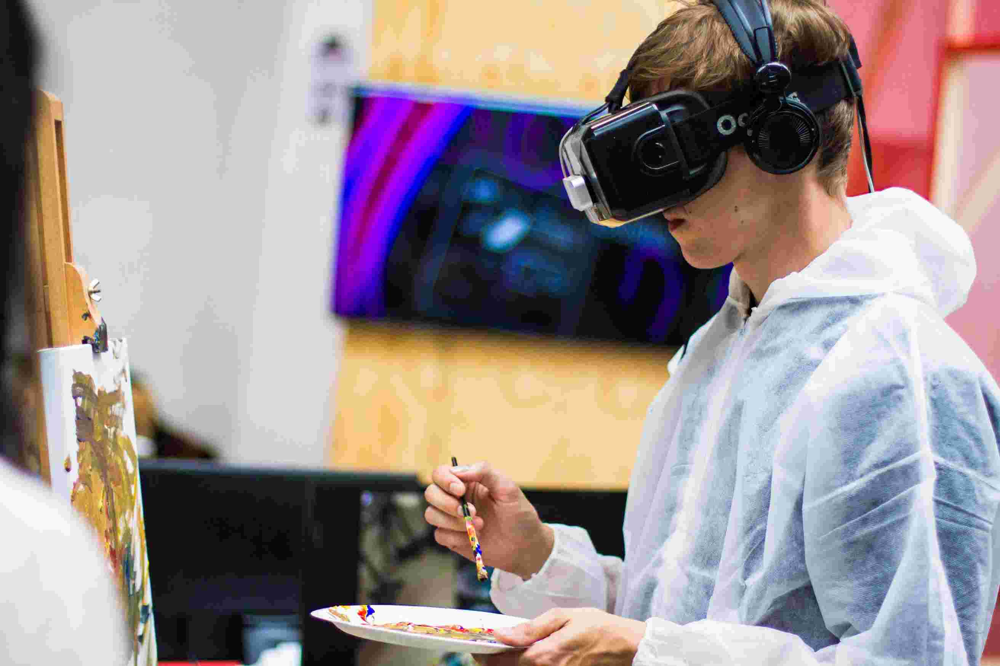

SOBRE SANJO VR

EXPLORA
Con SANJOVR podés explorar nuevas realidades
SUMERGITE
Con SANJOVR podés sumergirte en nuevas experiencias

INNOVÁ
Con SANJOVR vas a poder utilizar tecnologías nunca antes vistas en la
OBJETIVO
Mejorar la calidad de educación de nuestros estudiantes.
Proveer a nuestros alumnos con nuevas tecnologías innovadoras.
Hacer que los estudiantes disfruten y se diviertan aprendiendo.
SURGIMIENTO